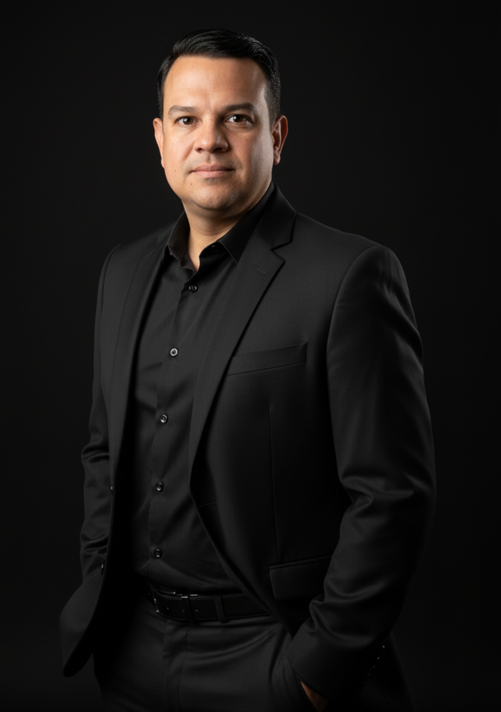

Programa de Acompanhamento — Conhecimento de Valor
Imagine acordar todos os dias sabendo que o seu conhecimento está impactando vidas, enquanto você trabalha no seu horário, com mais liberdade e reconhecimento financeiro. O programa é o caminho — e eu caminho com você.
O que especialistas sentem, mas raramente dizem
Anos de estudo, prática e resultados comprovados. Uma reputação construída com dedicação. E mesmo assim, uma sensação persistente de que o teto está cada vez mais próximo — porque tudo o que você conquistou ainda depende da sua presença, da sua agenda, do seu corpo presente.
Você entrega transformações reais todos os dias. Mas quando você para — por um dia, uma semana, um mês — a receita para junto. O seu valor máximo ainda está preso a uma janela de agenda.
A ideia de criar um infoproduto já passou pela sua cabeça. Mas veio junto a dúvida: "Com tanta coisa gratuita — e agora com IA gerando conteúdo — alguém vai pagar pelo meu?" E o projeto não saiu do lugar.
Você tentou uma vez. Ou conhece alguém que tentou. Comprou o curso, começou animado, e travou no meio do caminho. O projeto ficou pela metade — e com ele, a crença de que era possível.
Férias precisam de meses de antecedência. Uma viagem espontânea é quase impossível. A sua liberdade está condicionada à sua agenda — e no fundo, você sabe que merecia mais do que isso.
O mundo digital parece um universo à parte. Algoritmos, tráfego, funis, copy... Você não se vê nesse papel. Você é um especialista — não um criador de conteúdo.
Você sabe — no mais profundo — que o seu conhecimento tem um alcance muito maior do que o número de pessoas que você consegue atender presencialmente. Só ainda não encontrou o caminho para isso — nem a pessoa certa para percorrê-lo com você.
Você não precisa de mais um método.
Você precisa de alguém que não deixe você parar
no meio do caminho.
A informação nunca foi o problema. O que para a maioria dos especialistas não é falta de capacidade — é a solidão do processo. Criar um infoproduto do zero, no meio de uma rotina já cheia, sem alguém que conheça cada obstáculo antes que ele apareça... é onde os projetos morrem, não por falta de talento, mas por falta de suporte real.
A pergunta que está na sua cabeça agora
Sim — e é exatamente por isso que ter só um método ou só uma ferramenta deixou de ser suficiente. A IA democratizou a produção. Mas ela não cria a clareza sobre o que você tem de genuinamente único. Ela não valida se existe demanda real antes de você investir meses produzindo. Ela não posiciona a sua oferta com a autoridade que a sua trajetória merece.
E principalmente: ela não está lá quando você trava — e você vai travar. Todo mundo trava. A diferença está em ter alguém do seu lado nesse momento, com a experiência de quem já passou por ali, para te ajudar a atravessar.
A IA é uma ferramenta poderosa que usamos juntos ao longo de todo o programa. Ela acelera a produção, otimiza processos e elimina o que seria horas de trabalho manual. Mas ela trabalha a serviço da sua estratégia — não no lugar dela.
Como funciona
Não é uma plataforma com vídeos esperando que você encontre tempo. É um processo guiado, etapa por etapa, ao seu lado — com direcionamento estratégico, feedback honesto e presença real em cada momento que importa. Do primeiro passo ao primeiro resultado.
Etapa 01
Clareza de Expertise
Definimos juntos o que você tem de único, para quem é e qual transformação você entrega com autoridade.
Etapa 02
Validação de Demanda
Antes de produzir uma aula sequer, confirmamos que existe um comprador esperando do outro lado.
Etapa 03
Estrutura do Produto
Construímos a jornada de transformação do aluno — o esqueleto do seu infoproduto, com começo, meio e fim claros.
Etapa 04
Produção Acelerada
Gravação, edição e entrega — com os atalhos certos e IA como aliada que elimina horas de trabalho manual.
Etapa 05
Oferta e Posicionamento
Copy, precificação e mensagem — para que o mercado reconheça, confie e compre com convicção.
Etapa 06
Lançamento
Estratégia completa — do aquecimento ao fechamento de carrinho. Nada deixado ao acaso.
Etapa 07
Escala e Recorrência
Como transformar o primeiro lançamento em uma fonte de receita que funciona de forma contínua.
O que torna este programa diferente
Sob medida para você
Cada decisão — nicho, formato, preço, canal — é tomada considerando o seu contexto, a sua história e o seu momento. Não uma fórmula genérica aplicada a todo mundo.
Velocidade real
Quem tenta sozinho leva meses — ou desiste. Com acompanhamento, você vai direto ao que importa, sem os desvios que custam tempo, energia e motivação.
Feedback que transforma
A IA concorda com tudo que você escreve. Eu não. Você precisa de alguém que aponte o que não está funcionando antes que você invista mais tempo nisso.
Compromisso com o seu resultado
Quando alguém acompanha, cobra e acredita no seu projeto, a probabilidade de você chegar ao fim é exponencialmente maior do que sozinho.
Experiência de quem já errou por você
Mais de 10 infoprodutos criados e lançados. Você herda os acertos e não paga pelos erros que já foram cometidos — e superados — antes de você.
De onde você estiver
100% remoto. Localização nunca foi limitação — e o programa foi construído exatamente para provar isso na prática.
O que está incluído além das etapas
Mão na Massa: as ferramentas que uso no meu dia a dia
Aulas rápidas e práticas no formato "Mão na Massa" — focadas nas ferramentas estratégicas que utilizo para otimizar processos e ganhar velocidade na produção. Sem enrolação, sem teoria desnecessária. Você aprende fazendo, exatamente como eu faço.
2 encontros mensais via Google Meet durante 6 meses
Ao longo de 6 meses, realizamos 2 encontros mensais ao vivo — momentos onde aplico diretamente o meu olhar estratégico à sua realidade e aos desafios do seu projeto. Não é uma aula genérica. É uma sessão construída em cima do que você está vivendo naquele momento.
Honestidade antes de qualquer coisa

Quem conduz o programa
Estrategista Digital & Mentor de Experts
Flávio não ensina teoria retirada de livros. Ele percorreu cada etapa na prática — do zero ao produto no ar, do primeiro lançamento à recorrência — em mais de 10 infoprodutos criados, produzidos e lançados ao longo da sua trajetória.
No processo, identificou o padrão real que trava os melhores especialistas: não é falta de conhecimento. É não ter alguém ao lado que conheça cada ponto de travamento — e que não deixe você desistir quando o caminho fica difícil.
Hoje, como mentor e co-produtor de infoprodutos, atende experts no Brasil e no exterior — provando que localização nunca foi limitação. De Mato Grosso, constrói negócios digitais que funcionam independente de onde o especialista esteja.
+10
infoprodutos
criados
BR+
Brasil e
exterior
100%
processo vivido
na prática
O que ainda pode estar te travando
Não tenho tempo. Já trabalho demais.
O programa existe exatamente para que você gaste o mínimo de tempo possível no processo. O acompanhamento elimina os desvios que consomem semanas de quem tenta sozinho. E a pergunta real é outra: você pode continuar do jeito que está pelos próximos anos?
Não entendo nada de tecnologia.
Você não precisa. Cada etapa técnica é trabalhada junto — com as ferramentas certas indicadas e suporte direto em cada passo. Você foca no seu conhecimento. A parte técnica, a gente resolve juntos.
E se eu criar e não vender nada?
A etapa de validação existe para eliminar esse risco. Você não vai produzir nada antes de confirmar que existe demanda real. Esse é um dos erros mais comuns — e é o primeiro que o programa foi construído para evitar.
Parece que é só para quem já tem audiência.
Não é. A maioria dos primeiros lançamentos acontece sem audiência consolidada — com tráfego pago e relacionamentos diretos. O programa cobre exatamente esse cenário: do zero, sem depender de seguidores.
Como funciona o acompanhamento na prática?
Após a aprovação da aplicação, definimos juntos o formato mais adequado para o seu ritmo e projeto. É 100% remoto e adaptado à sua rotina — não o contrário. Além dos encontros mensais ao vivo, você tem suporte direto ao longo de todo o processo.
⏳ Vagas limitadas por turma — o acompanhamento individual exige dedicação real de ambos os lados.
O programa não é para todo mundo — e isso é intencional. Quero trabalhar com quem tem algo real a oferecer e está pronto para construir isso com seriedade e comprometimento.
Como funciona a aplicação
✦ Garantia de 30 dias
Se nos primeiros 30 dias você sentir que o programa não é o que esperava, devolvemos 100% do seu investimento — sem burocracia, sem perguntas, sem letras miúdas. O risco é meu, não seu.
Últimas dúvidas
Em quanto tempo vejo resultado?
Participantes que seguem o processo de forma consistente conseguem ter o produto pronto e o primeiro lançamento feito em 60 a 90 dias. O acompanhamento acelera significativamente esse ritmo em relação a quem tenta sozinho.
Preciso de câmera, estúdio ou equipamentos profissionais?
Não. O celular que você tem hoje é suficiente para começar. Qualidade de conteúdo e clareza de entrega importam muito mais do que qualidade de produção.
O acompanhamento é individual ou em grupo?
Isso é definido após a aplicação, de acordo com o seu perfil e necessidade. Existe formato para ambos os casos, sempre com o olhar estratégico aplicado diretamente à sua realidade.
Posso participar de fora do Brasil?
Sim. O programa é 100% remoto e já atende especialistas no exterior. Localização nunca foi — e nunca será — uma limitação.
Como funcionam os encontros ao vivo?
São 2 encontros mensais via Google Meet ao longo de 6 meses. Cada encontro é uma sessão estratégica focada nos desafios reais do seu projeto naquele momento — não uma aula genérica.
A versão da sua vida onde o seu conhecimento trabalha por você — independente de onde você esteja — começa com uma aplicação de 5 minutos.